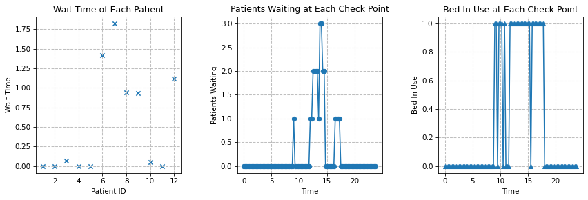

Clinic Resource Planning
In this notebook, we are going to explore ways that one can apply Discrete Event Simulation when making decisions for hospital resource planning. The notebook is divided into multiple scenarios, each incorporating more uncertainties than the previous one. We encourage you to create your own Jupytor notebook and follow along. If you do not have Python or Jupyter Notebook installed yet, you could also experiment with the virtual notebook by clicking “Launch Syzygy” below. On the other hand, the dowloadable Jupyter Notebook can be found here.
Background
Discrete Event Simulation (DES) is a useful decision making tool that can be applied to situations where resources are limited and queues exists in the process or system. Using DES, stakeholders can assess the outcomes, measured by specified Key Point Indicators (KPIs), of various scenarios (e.g. different bed capacities or staffing schedules in a clinic) without having to conduct experiments onsite (read more about DES itself here). Nowadays, there are many softwares that enable not only simulations but also animations of systems and processes. However, in this notebook, we will take a look at a process-based discrete event simulation framework within Python called SimPy. Through this notebook, we hope to give you some basic ideas of what some of the software packages are doing behind the scene.
Before we begin, please download and install the following packages (you might still need to “pip install” the simpy package even if you are running the notebook on Syzygy):
import simpy as sim
import numpy as np
import pandas as pd
import matplotlib.pyplot as plt
from matplotlib.ticker import MaxNLocatorIn the package SimPy, simulations are conducted within an environment. Some tutorials initiate the environment after all the resources and processes are defined, but we have found it more intuitive to keep it at the beginning so that people know what the variable env refers to later on in different Python functions or classes.
env = sim.Environment()Scenario One: Simple Process w/ Single Resource
In the first scenario, we want to start by building a really simple single-process simulation model with minimum uncertainties. Let’s assume the following for a walk-in clinic:
- There is only one required resource for each patient: a bed (tied to a doctor)
- There is only one bed (and doctor) in the clinic
- The clinic opens from 9am to 5pm
- The first patient arrives at exactly 9am
- After that, a new patient arrives every half an hour
- The last patient walks in at excatly 4:30pm
- Each patient uses the bed for exactly 30 minutes (for diagnosis)
First, as you may have already imagined, we will set up the patient arrival schedule based on their interarrival time (which later on would be generated using random variables). We will also assign the diagnosis time to a variable so that our code could be more dynamic for the future:
arr_sche = np.arange(9.0, 17.0, 0.5) # you could also try np.linspace
num_patients = len(arr_sche)
diag_time = 0.5
print(arr_sche)[ 9. 9.5 10. 10.5 11. 11.5 12. 12.5 13. 13.5 14. 14.5 15. 15.5
16. 16.5]After you have created the arrival schedule and diagnosis time, we can go back to the environment that we initiated and create withint the environment our resource: bed
bed = sim.Resource(env, capacity=1)In more complicated discrete simulation models, one would usually need to utilize Python class (read more about Python class here). However, since we are starting simple, we can just define a function first, and create classes later when we move into scenarios with more resources and uncertainties.
In the function that we define below, we want the user to pass in five arguments: the environment of the simulation, the patient ID (which will actually be defined later when we run the simulation, the resource needed, the arrival time of the patient (taken from our schedule), and the length that this resource is going to be used (diagnosis time). The function contains yield instead of return, which allows it to be come a generator (read more about Python generators here. Take a look at the function, and we will dive deeper into it below the next cell.
def pat(env, pat_id, resource, arr_time, diag_time):
yield env.timeout(arr_time)
print("{} arrives at the clinic at {} o'clock".format(pat_id, env.now))
with resource.request() as req:
yield req
print("{} starts using the bed at {} o'clock".format(pat_id, env.now))
yield env.timeout(diag_time)
print("{} leaves the clinic at {} o'clock".format(pat_id, env.now))In SimPy, simulation normally starts at time 0 unless specified. Time is also unit-less within SimPy, so we can define it however we want, though we do need to keep it consistent. In the function above, we first let the simulation run with no events until the time when the first patient arrives. Then we generate the first patient, who will request for the resource, our one bed. If the resource is available (it will always be available because of our current setup), the patient takes over the resource until it finishes using it; however, if the resource is not available, the patient will wait in a queue and once the resource becomes available it will be released to the next patient in line.
After we set up the function that we need for the simulation, we then have to create processes for each of the patient using the generator that was created earlier (read about why entities are considered processes in SimPy here):
for i in range(num_patients):
env.process(pat(env, 'Patient {}'.format(i), bed, arr_sche[i], diag_time))Finally, we can run our simulation, and you will see a detailed description of all the events under the cell below:
env.run()Patient 0 arrives at the clinic at 9.0 o'clock
Patient 0 starts using the bed at 9.0 o'clock
Patient 1 arrives at the clinic at 9.5 o'clock
Patient 0 leaves the clinic at 9.5 o'clock
Patient 1 starts using the bed at 9.5 o'clock
Patient 2 arrives at the clinic at 10.0 o'clock
Patient 1 leaves the clinic at 10.0 o'clock
Patient 2 starts using the bed at 10.0 o'clock
Patient 3 arrives at the clinic at 10.5 o'clock
Patient 2 leaves the clinic at 10.5 o'clock
Patient 3 starts using the bed at 10.5 o'clock
Patient 4 arrives at the clinic at 11.0 o'clock
Patient 3 leaves the clinic at 11.0 o'clock
Patient 4 starts using the bed at 11.0 o'clock
Patient 5 arrives at the clinic at 11.5 o'clock
Patient 4 leaves the clinic at 11.5 o'clock
Patient 5 starts using the bed at 11.5 o'clock
Patient 6 arrives at the clinic at 12.0 o'clock
Patient 5 leaves the clinic at 12.0 o'clock
Patient 6 starts using the bed at 12.0 o'clock
Patient 7 arrives at the clinic at 12.5 o'clock
Patient 6 leaves the clinic at 12.5 o'clock
Patient 7 starts using the bed at 12.5 o'clock
Patient 8 arrives at the clinic at 13.0 o'clock
Patient 7 leaves the clinic at 13.0 o'clock
Patient 8 starts using the bed at 13.0 o'clock
Patient 9 arrives at the clinic at 13.5 o'clock
Patient 8 leaves the clinic at 13.5 o'clock
Patient 9 starts using the bed at 13.5 o'clock
Patient 10 arrives at the clinic at 14.0 o'clock
Patient 9 leaves the clinic at 14.0 o'clock
Patient 10 starts using the bed at 14.0 o'clock
Patient 11 arrives at the clinic at 14.5 o'clock
Patient 10 leaves the clinic at 14.5 o'clock
Patient 11 starts using the bed at 14.5 o'clock
Patient 12 arrives at the clinic at 15.0 o'clock
Patient 11 leaves the clinic at 15.0 o'clock
Patient 12 starts using the bed at 15.0 o'clock
Patient 13 arrives at the clinic at 15.5 o'clock
Patient 12 leaves the clinic at 15.5 o'clock
Patient 13 starts using the bed at 15.5 o'clock
Patient 14 arrives at the clinic at 16.0 o'clock
Patient 13 leaves the clinic at 16.0 o'clock
Patient 14 starts using the bed at 16.0 o'clock
Patient 15 arrives at the clinic at 16.5 o'clock
Patient 14 leaves the clinic at 16.5 o'clock
Patient 15 starts using the bed at 16.5 o'clock
Patient 15 leaves the clinic at 17.0 o'clockScenario Two:
Ta-da! We just ran our first SimPy simulation. However, you probably have noticed right away that:
- The output is long and not very readable even though we only have 15 patients, 3 processes, and 1 resource right now
- Two processes—the arrival of patients and the use of resource—are modeled within the same function, which can be confusing as the model scales
In the this scenario, we are going to use classes and methods to separate the different processes and objects/entities; we will also visualize a couple of key point indicators (KPIs) so that the simulation results are more interpretable. Before we start, let’s slightly modify the problem statement and incorporate more uncertainties:
- There is only one required resource for each patient: a bed (tied to a doctor)
- There is only one bed (and doctor) in the clinic
- The clinic officially operates from 9am to 5pm
- The clinic stops accepting new patients at 5pm, but will stay open until the last patient leaves
- The first patient arrives exactly at 9am
- On average, 2 patients arrive every hour (equivelant to a random inter-arrival time with a mean of 1/2 hours); the inter-arrival time can be modeled with an exponential distribution
- Each patient uses the bed for a random amount of time with an average of 30 minutes (0.5 hours), which can also be modeled with an exponential distribution
cap_bed = 1.0
avg_arr = 2.0 # patients per hour
avg_bed_use = 0.5 # hour per patient
clnc_open = 9.0 # o'clock
clnc_close = 17.0 # o'clockIn this scenario, we will define four classes: Record, Model, Patient, and Bed (Resource). The Record class…
class Record:
check_interval = 0.25
check_time = []
check_pat_current = []
check_pat_waiting = []
check_bed_inuse = []
record_pat_id = []
record_time_in = []
record_wait_time = []
record_time_use_bed = []
record_bed_use = []
record_time_out = []
count_pat = 0
pat_waiting = 0
pat_current = 0
results = pd.DataFrame()
history = pd.DataFrame()
class Patient:
all_patients = {}
def __init__(self, env):
Record.count_pat += 1
self.id = Record.count_pat
self.bed_use = np.random.exponential(avg_bed_use)
self.time_in = env.now
self.time_queue = 0
self.time_use_bed = 0
self.time_out = 0
class Bed:
def __init__(self, env, cap_bed):
self.bed = sim.Resource(env, capacity=cap_bed)
class Model:
def __init__(self):
self.env = sim.Environment()
def run(self):
self.resource_bed = Bed(self.env, cap_bed)
self.env.process(self.patient_arrival())
self.env.process(self.check_model())
self.env.run(until=24.0)
self.build_report()
self.plot_results()
def use_bed(self, pat):
with self.resource_bed.bed.request() as req:
Record.pat_waiting += 1
Record.pat_current += 1
yield req
pat.time_use_bed = self.env.now
pat.time_queue = self.env.now - pat.time_in
Record.pat_waiting -= 1
yield self.env.timeout(pat.bed_use)
pat.time_out = self.env.now
Record.pat_current -= 1
Record.record_pat_id.append(pat.id)
Record.record_time_in.append(pat.time_in)
Record.record_wait_time.append(pat.time_queue)
Record.record_time_use_bed.append(pat.time_use_bed)
Record.record_bed_use.append(pat.bed_use)
Record.record_time_out.append(pat.time_out)
def patient_arrival(self):
yield self.env.timeout(clnc_open)
while self.env.now < 17.0:
pat = Patient(self.env)
pat.all_patients[pat.id] = pat
self.env.process(self.use_bed(pat))
pat_arr_next = np.random.exponential(1/avg_arr)
yield self.env.timeout(pat_arr_next)
def check_model(self):
while True:
Record.check_time.append(self.env.now)
Record.check_pat_waiting.append(Record.pat_waiting)
Record.check_pat_current.append(Record.pat_current)
Record.check_bed_inuse.append(self.resource_bed.bed.count)
yield self.env.timeout(Record.check_interval)
def build_report(self):
Record.results['Time'] = Record.check_time
Record.results['Current Patients'] = Record.check_pat_current
Record.results['Waiting Patients'] = Record.check_pat_waiting
Record.results['Bed in Use'] = Record.check_bed_inuse
Record.history['Patient ID'] = Record.record_pat_id
Record.history['Time In'] = Record.record_time_in
Record.history['Wait Time'] = Record.record_wait_time
Record.history['Bed Start'] = Record.record_time_use_bed
Record.history['Use Time'] = Record.record_bed_use
Record.history['Time Out'] = Record.record_time_out
def plot_results(self):
fig = plt.figure(figsize=(12, 4.5), dpi=75)
ax1 = fig.add_subplot(131)
x = Record.record_pat_id
y = Record.record_wait_time
ax1.scatter(x, y, marker='x')
ax1.set_xlabel('Patient ID')
ax1.set_ylabel('Wait Time')
ax1.set_title('Wait Time of Each Patient')
ax1.grid(True, which='both', lw=1, ls='--', c='.75')
ax1.xaxis.set_major_locator(MaxNLocator(integer=True))
ax2 = fig.add_subplot(132)
x = Record.check_time
y = Record.check_pat_waiting
ax2.plot(x, y, marker='o')
ax2.set_xlabel('Time')
ax2.set_ylabel('Patients Waiting')
ax2.set_title('Patients Waiting at Each Check Point')
ax2.grid(True, which='both', lw=1, ls='--', c='.75')
ax3 = fig.add_subplot(133)
x = Record.check_time
y = Record.check_bed_inuse
ax3.plot(x, y, marker='^')
ax3.set_xlabel('Time')
ax3.set_ylabel('Bed In Use')
ax3.set_title('Bed In Use at Each Check Point')
ax3.grid(True, which='both', lw=1, ls='--', c='.75')
plt.tight_layout(pad=3)
plt.show()
model = Model()np.random.seed(0)
model.run()
display(Record.history)| Patient ID | Time In | Wait Time | Bed Start | Use Time | Time Out | |
|---|---|---|---|---|---|---|
| 0 | 1 | 9.000000 | 0.000000 | 9.000000 | 0.397937 | 9.397937 |
| 1 | 2 | 9.627965 | 0.000000 | 9.627965 | 0.461612 | 10.089577 |
| 2 | 3 | 10.021566 | 0.068011 | 10.089577 | 0.275524 | 10.365101 |
| 3 | 4 | 10.540646 | 0.000000 | 10.540646 | 0.287760 | 10.828405 |
| 4 | 5 | 11.652408 | 0.000000 | 11.652408 | 1.657456 | 13.309864 |
| 5 | 6 | 11.894209 | 1.415655 | 13.309864 | 0.784448 | 14.094312 |
| 6 | 7 | 12.270546 | 1.823766 | 14.094312 | 0.419716 | 14.514028 |
| 7 | 8 | 13.569673 | 0.944355 | 14.514028 | 0.036843 | 14.550871 |
| 8 | 9 | 13.615254 | 0.935618 | 14.550871 | 0.010213 | 14.561084 |
| 9 | 10 | 14.508997 | 0.052087 | 14.561084 | 0.752892 | 15.313976 |
| 10 | 11 | 15.529154 | 0.000000 | 15.529154 | 1.922611 | 17.451765 |
| 11 | 12 | 16.331774 | 1.119991 | 17.451765 | 0.309465 | 17.761230 |
Created and maintained by the Master of Business Analytics Community
Licensed under a Creative Commons Attribution-NonCommercial-ShareAlike 4.0 International License.